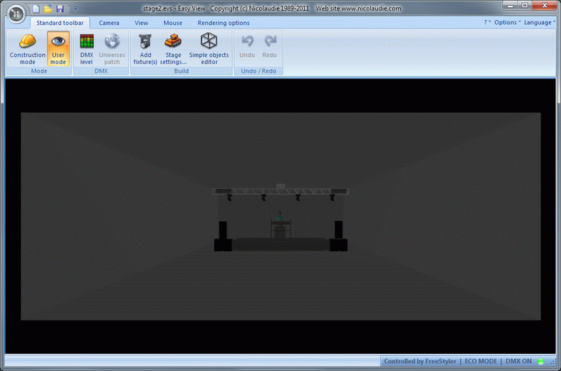

Magic 3D Easy View is a program that allows you to visualize your lighting in a simulated room in a window on your screen.
(We need a better picture)

Instead of connecting fixtures to a USB–DMX dongle, Freestyler is linked to Magic 3D Easy View and you will be able see how the lights behave in a window on your screen.
In the commercial version, the visualizer software is sold with a DMX dongle that can receive the DMX signal.
However with Freestyler, it functions as an add-on – and by setting the FreeStyler output interface to Virtual the the two programs are connected internally so a dongle is not required.
FreeStyler and Magic 3D Easy View are not two-way linked programs. This means FreeStyler controls the lights and 3D Easy View only displays how the lights will look.
For example, it is not possible to change the color of a fixture in the visualizer window and have Freestyler recognize that change.
Fixtures.
The fixtures for 3D Easy View are different from FreeStyler fixtures. Each program has its own separate fixture description files.
The FreeStyler fixture definition converts fader values, buttons and selected icons to a DMX value.
The Magic 3D Easy View fixture converts received DMX values to light beams with direction, color and intensity.
Magic 3D fixtures are defined using the Scanlibrary Editor which can be found in the Magic 3D Easy View folder.
Remember that many fixture definitions for the visualizer have been created by Nicolaudine/SunLite users. This means that fixture definitions may have with errors or improper behavior. There is only one way to deal with this – open the fixture definition in the ScanLibrary Editor and correct it yourself.
Software Versions
Since FreeStyler and Magic 3D Easy View are not from the same developer, it is not guaranteed that the FreeStyler installer has installed latest version of the visualizer.
The latest beta from Nicolaudie can always be found on their website.
Download the latest version and substitute that for the “exe” that FreeStyler uses.
{kind=link}